## <h3>Capitulo 7: MEDIOS DE TRANSMISION</h3> <section> <h4></h4> <h4>Nombre: Abby Raul Cordova Lopez</h4> <h5>Materia: Telecomunicaciones</h5> <h5>Maestro: Tuxtter</h5> </section> --- ## <h4>¿Que son los medios de transmision?</h4> 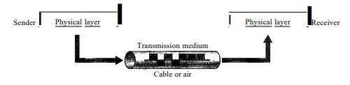 <p style="font-size: 80%;">Los medios de transmisión se pueden definir como los canales o vías a través de los cuales se envía información desde un emisor a un receptor. Estos pueden ser físicos, como cables y fibras ópticas, o inalámbricos, como señales de radio y microondas, y su función es garantizar que los datos sean transmitidos de manera eficiente y efectiva.</p> --- ## <h4>Categoria de transmision</h4> 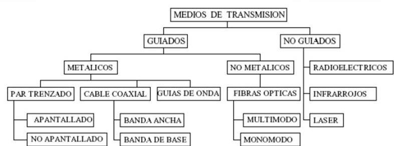 --- ## Medios Guiados Los medios guiados son aquellos canales de comunicación que utilizan un soporte físico para transmitir información de un punto a otro. --- ## <h2>Cable cruzado o pares</h2> 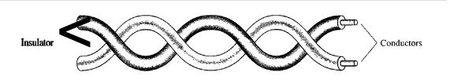 <p style="font-size:3.5vh;">Los cables cruzados son un tipo de cable de red que consta de pares de hilos de cobre, diseñados para actuar simultáneamente como receptores de datos y líneas de tierra. La característica distintiva de los cables cruzados es que ciertos pares están interconectados de tal manera que los hilos de transmisión de un extremo se cruzan con los hilos de recepción en el otro extremo. Esto ayuda a equilibrar la señal y minimizar el ruido o "crosstalk" (interferencia entre cables).</p> --- ## <h2>Cables UTP VS STP</h2> <div style="display:flex; align-items:center; font-size:3.5vh;" > <p style="width:60%">Este cable consiste en pares trenzados de hilos de cobre sin ningún tipo de blindaje adicional. Su diseño permite una buena calidad de señal y es comúnmente utilizado en redes de área local (LAN).</p> 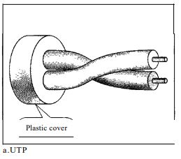 </div> <hr width="70%"> <div style="display: flex; align-items:center; font-size:3.5vh;"> <p style="width:60%">el cable STP incluye una capa de blindaje metálico que protege contra interferencias externas y ruido. Esto lo hace más adecuado para entornos donde la interferencia es un problema significativo.</p> 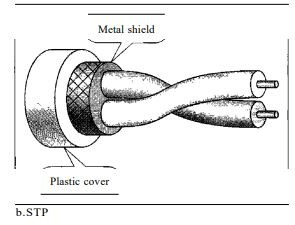 </div> --- ## <h3>Categorias de UTP</h3> <section > <table style="font-size: 70%;"> <tr> <th>Catergoria</th> <th>Especificaciones</th> <th>Mps</th> <th>Uso</th> </tr> <tr> <td>1</td> <td>UTP</td> <td>0.1</td> <td>Telefono</td> </tr> <tr> <td>2</td> <td>CAT 2 Mejorado</td> <td>10</td> <td>LAN</td> </tr> <tr> <td>3</td> <td>CAT 3 Mejorado</td> <td>20</td> <td>LAN</td> </tr> <tr> <td>4</td> <td>CAT 4 Mejorado</td> <td>100</td> <td>LAN</td> </tr> <tr> <td>5</td> <td>Cable 24 AWG</td> <td>125</td> <td>LAN</td> </tr> <tr> <td>SE</td> <td>Extensión de Cat. 5</td> <td>200</td> <td>LAN</td> </tr> <tr> <td>6</td> <td>Cable de alta velocidad</td> <td>20</td> <td>LAN</td> </tr> <tr> <td>7</td> <td>CAble SSTP</td> <td>600</td> <td>LAN</td> </tr> </table> </section> --- ## <h3>Conector UTP</h3> <div style="display: flex; justify-content: center; gap: 10px;"> <figure class="image-container"> 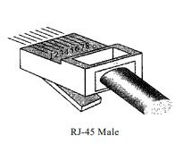 <figcaption>Conector Macho RJ45</figcaption> </figure> <figure class="image-container"> 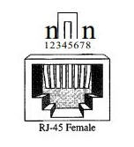 <figcaption>Conector Hembra RJ45 </figcaption> </figure> </div> --- ## <h3>Cable Coaxial</h3> 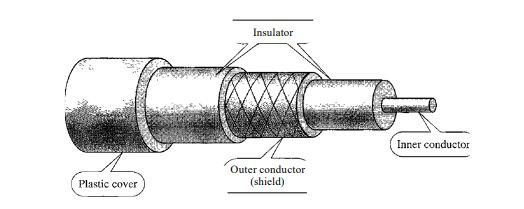 <p>El cable coaxial es un tipo de cable que consiste en un conductor central de cobre, rodeado por un aislante. Este aislante está cubierto por una malla metálica que protege contra interferencias, y todo el conjunto está recubierto por una capa externa de plástico.</p> --- ## <h3>Categoria de cable coaxial</h3> <table> <tbody style="font-size: 80%;"> <tr> <th>Categoria</th> <th>Impedancia</th> <th>Uso</th> </tr> <tr> <td>RG-6</td> <td>75 Ohmz</td> <td>Cable para TV, sistemas de datos</td> </tr> <tr> <td>RG-59</td> <td>75 Ohmz</td> <td>Aplicaciones de video, CCTV</td> </tr> <tr> <td>RG-11</td> <td>75 Ohmz</td> <td>Ethernet Alto rendimiento</td> </tr> <tr> <td>RG-58</td> <td>50 Ohmz</td> <td>Ethernet bajo rendimiento</td> </tr> </tbody> </table> --- ## <h3>Conectores BNC</h3> 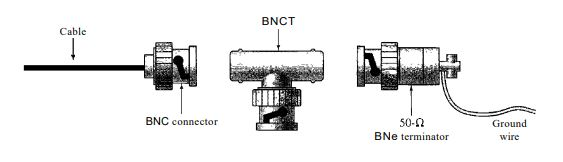 <ul> <li> El conector BNC para conectar el cable a un dispositivo </li> <li> El conector BNC en T para redes Ethernet </li> <li> El terminador BNC que evita la reflexión de la señal al final del cable </li> </ul> --- ## <h3>Fibra optica</h3> 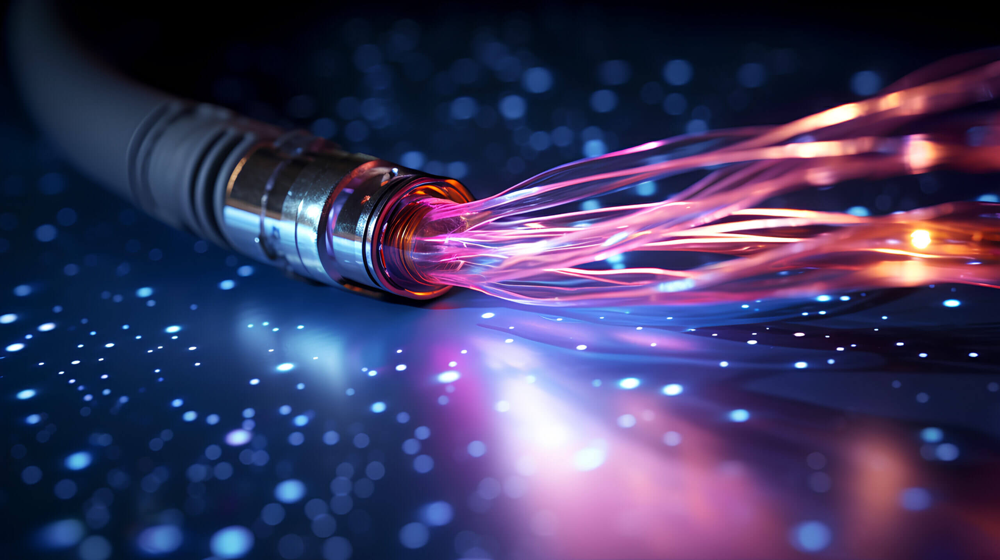 <p style="font-size:3.5vh;">El cable de fibra óptica está compuesto por filamentos de vidrio o plástico que transmiten señales en forma de luz. Este tipo de cable permite la transmisión de grandes cantidades de datos a altas velocidades y con mínima pérdida de señal.</p> --- ## <h3>Refraccion de la luz</h3> <div style="display: flex; justify-content: center; gap: 10px;"> 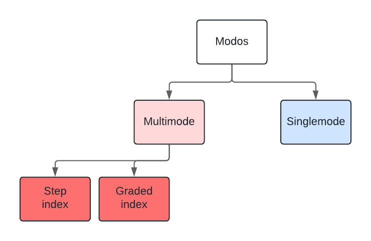 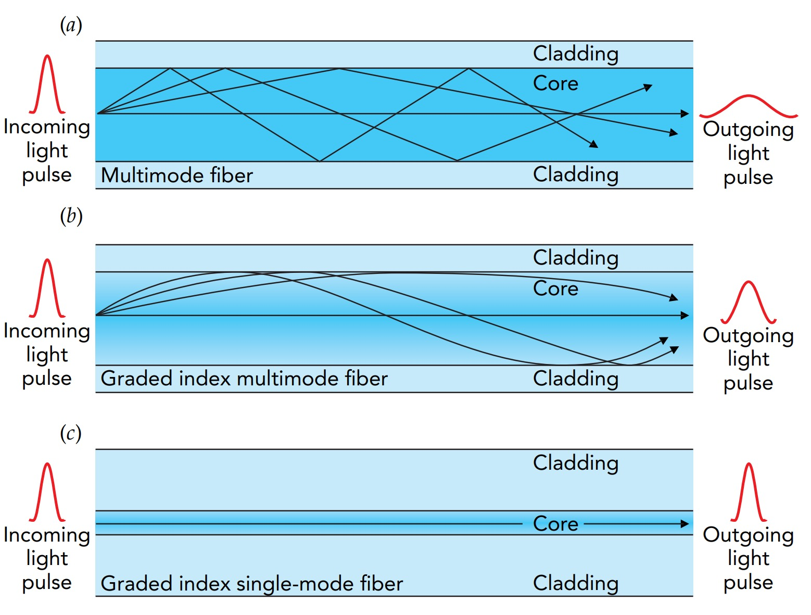 </div> <p></p> --- ## <h3>Perdidas en el doblado</h3> <div style="display: flex; justify-content: center; gap: 10px; padding-top: 60px;" > 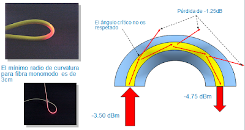 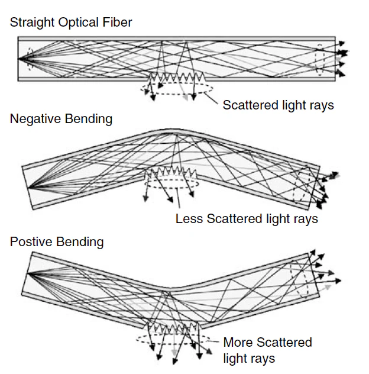 </div> --- ## Tipos de fibras opticas <table style="font-size: 75%;"> <tbody> <tr> <th>Tipo</th> <th>Diámetro del Núcleo</th> <th>Aplicación</th> <th>Velocidades Soportadas</th> </tr> <tr> <th>Monomodo (SMF) </th> <th>8-10 mimetros</th> <th>Telecomunicaciones, largas distancias</th> <th>Altas velocidades a largas distancias</th> </tr> <tr> <td>Multimodo OM1 </td> <td>62.5 mimetros</td> <td>Redes LAN de baja velocidad </td> <td>Hasta 1 Gbps</td> </tr> <tr> <td>Multimodo OM2</td> <td>50 mimetros</td> <td>Redes LAN de menor velocidad</td> <td>Hasta 1 Gbps</td> </tr> <tr> </tr> </tbody> </table> --- ## Construccion del cable de fibra opticas <div style="display: flex; align-items: center; justify-content: space-between; font-size: 3.5vh; "> <div style="width: 45%; padding-right: 20px;"> <p>Los cables de fibra óptica están formados por tres componentes principales:</p> <ul> <li>Núcleo: es el centro de la fibra, hecho de vidrio o plástico de alta pureza, donde se transmite la luz</li> <li>Revestimiento (cladding): una capa de material menos denso que rodea el núcleo, que refleja la luz hacia adentro para mantenerla dentro del núcleo</li> <li>Revestimiento protector: una capa de plástico que protege la fibra de daños físicos y de la humedad</li> </ul> </div> <div style="width: 50%; text-align: left;"> 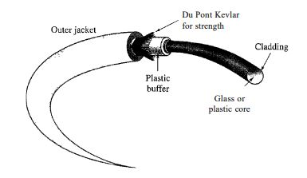 </div> </div> --- ## Conecotres para la fibra optica <img src="./imagenes/optica conectores.JPG" style="border-radius:8px;"> <ul style="font-size:3.5vh;"> <li>MT-RJ: Es un conector de las mismas dimensiones que el RJ45</li> <li>SC: subscriber channel es una conexion para servicios de TV, usando un mecanismo de jale/empuje</li> <li>ST: Straight-tip es una conexion para servicios de internet, usando un sistema de bayoneta para el anclaje</li> </ul> --- ## Medios No guiados Los medios no guiados son canales de comunicación que no utilizan un soporte físico para la transmisión de datos. En lugar de depender de cables o conductores, los medios no guiados transmiten información a través de ondas electromagnéticas --- ## wireless <p>Los medios no guiados transportan ondas electromagneticas sin uso de un coductor fisico, en el que cualquiera con espacio libre y un dispositvo puede recibir estas señales</p> --- ## Metodos de propagacion 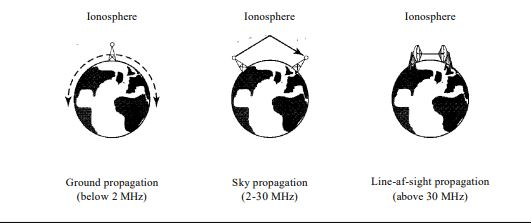 --- ## Bandas <table> <tbody style="font-size: 60%;"> <tr> <th>Banda</th> <th>Rango</th> <th>Propagacion</th> <th>Aplicacion</th> </tr> <tr> <td>VLF</td> <td>3-30 kHz</td> <td>En tierra</td> <td>Navegacion de radio en largo alcance</td> </tr> <tr> <td>LF</td> <td>30-300 kHz</td> <td>En tierra</td> <td>Radio balizas y localizadores de Navegacion</td> </tr> <tr> <td>MF</td> <td>300-3 MHz</td> <td>Cielo</td> <td>Radio AM</td> </tr> <tr> <td>HF</td> <td>3-30 MHz</td> <td>Cielo</td> <td>Banda Ciudadana (CB), comunicación puertos de aviacion</td> </tr> <tr> <td>VHF</td> <td>30-300 MHz</td> <td>Cielo y en linea de vision</td> <td>VHF TV, FM radio</td> </tr> <tr> <td>UHF</td> <td>300 MHz-3 GHz</td> <td>Linea de vision</td> <td>UHFTV, clulares, paging, satelites</td> </tr> <tr> <td>SHF</td> <td>3-30 GHz</td> <td>Linea de vision</td> <td>Comunicacion satelital</td> </tr> <tr> <td>EHF</td> <td>30-300 GHz</td> <td>Linea de vision</td> <td>Radares y astelites</td> </tr> </tbody> </table> --- ## Transmision de ondas inalambricas 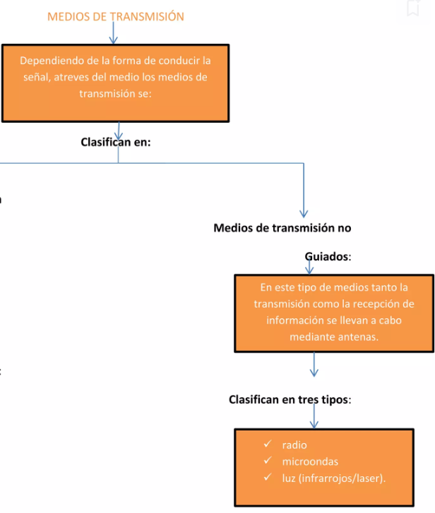 --- ## Señales de Radio <p style="font-size:3.5vh;">Las ondas de radio, que operan en el rango de frecuencias de 3 kHz a 1 GHz, son un medio de transmisión inalámbrica caracterizado por su capacidad omnidireccional, lo que significa que pueden propagarse en todas direcciones.</p> 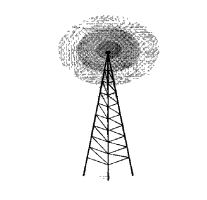 --- ## Señales microondas 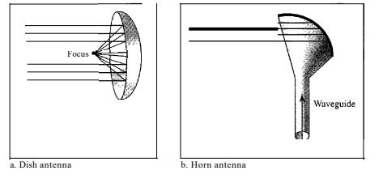 <p style="font-size:3.5vh;">Las microondas son un tipo de radiación electromagnética que se utiliza en diversas aplicaciones de comunicación, particularmente en transmisiones a larga distancia. Estas ondas emplean antenas unidireccionales para optimizar la recepción y transmisión de señales, destacando dos tipos principales de antenas</p> --- ## Las ondas infrarrojas <p style="font-size:3.5vh;">Las ondas infrarrojas, de 300 GHz a 400 THz, son ideales para comunicaciones de corto alcance. No atraviesan paredes, evitando interferencias entre sistemas cercanos, pero no sirven para largas distancias ni en exteriores, donde pueden interferir con la luz solar</p>